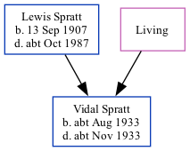

Vidal J Spratt cAug 1933 - c1933
[ Home ] | [ Calendar ] | [ Surnames Index ] | [ Family History ]The child of Lewis Spratt (a chief stage electrician) and Violet TongVidal Spratt, the second cousin on the father's side of Nigel Horne, was born in Thanet, Kent, England c. Aug 19331,2,3.
He died in Thanet c. Nov 19333,4.
Parents
- Lewis George was born on Sep 13, 1907
- Violet Herbina
Citations
- England & Wales births 1837-2006 - Findmypast
- England & Wales, Birth Index: 1916-2005 Online publication - Provo, UT, USA: The Generations Network, Inc., 2008.Original data - General Register Office. England and Wales Civil Registration Indexes. London, England: General Register Office. © Crown copyright. Published by permission of the Cont
- England & Wales, Death Index: 1984-2005 Online publication - Provo, UT, USA: The Generations Network, Inc., 2007.Original data - General Register Office. England and Wales Civil Registration Indexes. London, England: General Register Office. © Crown copyright. Published by permission of the Cont
- England & Wales deaths 1837-2007 - Findmypast
Media
England & Wales deaths 1837-2007 - BMD/D/1933/4/AZ/000902/037
England & Wales births 1837-2006 - BMD/B/1933/3/AZ/001058/067
Family Tree
Generated by ged2site. Last updated on Nov 13, 2024